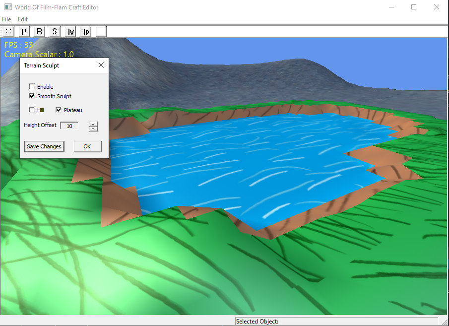
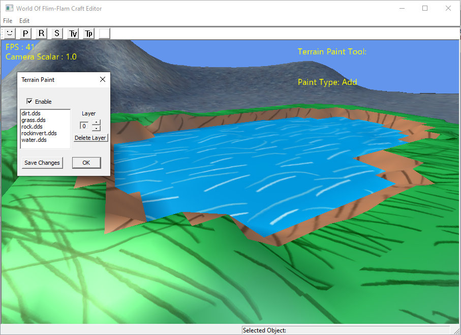

World Editor

Completed as part of a 4th-year gameplay tools programming module at Abertay University — extending world editor functionality with features commonly found in game engines.
Features built
- Mouse picking for selecting objects in the world.
- A widget to modify the transform of game objects using click-and-drag, with snap values.
- Camera controls.
- A terrain manipulation tool to manipulate the vertices of terrain objects.
- A terrain painting tool to paint textures onto the terrain surface.
- Optimised collision with terrain and mouse interaction for smoother manipulation and painting.
Screenshots

